Nasib elang jawa sungguh memprihatinkan. Burung endemis Jawa ini tergolong hewan terancam punah dengan status genting. Menurut data BirdLife International, saat ini populasi elang jawa di alam diperkirakan hanya tersisa sekitar 300–500 individu dewasa. Salah satu penyebab elang jawa terancam punah, yaitu semakin menyusutnya luas hutan alami di Jawa. Sebagai pulau dengan populasi penduduk terpadat di Indonesia, kebutuhan lahan untuk permukiman dan pertanian di Jawa semakin meningkat dari tahun ke tahun. Akibatnya, banyak hutan yang beralih fungsi menjadi lahan pertanian maupun permukiman. Saat ini, hutan alami yang tersisa di Jawa diperkirakan hanya sepuluh persen.
Tak hanya habitatnya yang dirusak, elang jawa juga kerap ditangkap dan diperjualbelikan sebagai satwa peliharaan. Padahal, elang jawa merupakan burung yang dilindungi Undang-Undang Republik Indonesia Nomor 5 Tahun 1990 tentang Konservasi Sumber Daya Alam Hayati dan Ekosistemnya, serta diperkuat lewat Kepres No. 4/1993 tentang Satwa dan Bunga Nasional. Elang jawa juga termasuk salah satu dari 14 satwa prioritas untuk diselamatkan berdasarkan SK Dirjen PHKA No. 132/2011. Jika perdagangan dan alih fungsi hutan tidak dihentikan, bukan tidak mungkin suatu saat nanti elang jawa hanya dapat dilihat dalam bentuk foto atau hanya dikenang sebagai burung yang identik dengan simbol negara, yaitu garuda.
1. Kalimat utama pada paragraf pertama adalah . . .
2. Bagi keluarga kami, bernyanyi sudah mendarah daging. Arti kata mendarah daging adalah …
3. Dua hari kemudian Pak Darman meminta tiap kelompok menyampaikan rencananya. Tentu saja setiap kelompok sudah siap dengan rencana pembuatan kerajinan tangan. Sekelompok demi sekelompok lalu menyampaikan rencana kepada Pak Darman. Ternyata tiap-tiap kelompok mempunyai pilihan yang berbeda. Yang membuat Pak Darman senang bahwa tiap kelompok akan benar-benar memamfaatkan barang bekas untuk membuat kerajinan tangan.
Kalimat berikut ini yang tidak sesuai dengan isi paragraf diatas adalah …
4. Bacalah teks berikut.
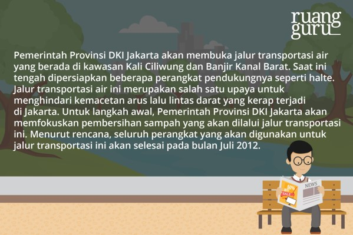Dampak yang akan terjadi jika masyarakat tetap membuang sampah di Kali Ciliwung adalah....
5. Bacalah syair di bawah ini
Aku bersujud kepadamu
Tuk memohon ampunanmu
Aku berdoa kepadamu
Tuk mengarapkan surgamu
Maksud isi syair tersebut adalah…
6. Gegar gentar suara mesin
Raja udara menguasai udara
Menderu gemuruh berpusing miring
Bagai burung mengintai mangsa
Perihal yang dibicarakan dalam puisi di atas adalah ...
7. Tidak akan sampai hati Dewi Rara Anteng akan menolak lamaran sang Buto. Sehingga untuk menerima lamaran sang Buto, Dewi Rara Anteng meminta untuk dibuatkan danau dalam waktu semalam. Permintaan itu disanggupi oleh sang Buto. Tetapi belum sampai jangka waktu sudah habis.
Sifat Dewi Rara Anteng yang ada dalam penggalan cerita di atas adalah
8. Bacalah kalimat acak berikut!
(1) Ketika itu, Sang Pangeran memiliki keahlian dalam membuat karya seni berupa gerabah, bahkan karya-karyanya banyak disukai orang.
(2) Konon katanya, bahan dasar gerabah berupa tanah liat yang berasal dari Desa Sitiwinangun yang memiliki nilai tinggi tanpa harus diolah terlebih dahulu.
(3) Menurut penuturan masyarakat, asal mula kerajinan tangan ini dari Pangeran Panjunan.
(4) Pertemuan ragam budaya di Cirebon meliputi Sunda, Jawa, Arab, Cina, Islam, serta Hindu membuat gerabah Cirebon memiliki ciri khas tersendiri dibandingkan daerah lain.
(5) Hasil karyanya terlihat sangat halus dan indah, seakan dapat menarik perhatian orang yang melihatnya.
Urutan kalimat agar menjadi paragraf yang padu adalah . . . .
9. Aku sangat senang sekali membaca buku. Terkadang karena keasyikan membaca, aku tidak mendengar teman yang berbicara kepadaku. Oleh karena itu aku dijuluki “si kutu buku”. Aku tidak marah dijuluki seperti itu. Kata ibu kutu buku itu artinya orang yang sangat gemar membaca buku.
Perbaikan yang tepat pada kalimat pertama paragraf di atas adalah…
10. Bacalah teks petunjuk rumpang berikut!
(1) Siapkan bahan-bahan untuk membuat roti goreng, yaitu tepung, susu bubuk, air, gula, garam, mentega, dan baking powder.
(2) Buatlah adonan roti dengan mencampurkan bahan-bahan yang sudah disediakan, kecuali air. Air dituangkan sedikit demi sedikit pada adonan.
(3) Lumatkan adonan, kemudian diamkan agar mengembang. Setelah itu, bagilah adonan besar menjadi beberapa bagian kecil.
(4) . . .
(5) Setelah berwarna kecokelatan, angkat. Tiriskan roti di atas piring, kemudian beri taburan bubuk gula di atasnya.
Kalimat petunjuk yang tepat untuk melengkapi bagian rumpang adalah . . .
11. Baterai Idol
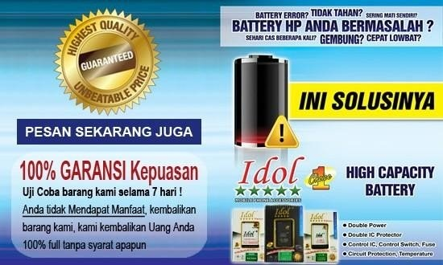1. Baterai anda sering error?
2. Cepat lowbat?
3. Ini solusinya!
4. Kapasitas tinggi!
5. Tidak mudah gembung!
6. Uji coba barang kami selama 7 hari
7. Tunggu apa lagi?
8. …
Kalimat yang tepat untuk melengkapi iklan tersebut adalah…
12. Bacalah teks pidato berikut
Pertama marilah kita panjatkan puji syukur kepada Tuhan yme karena pada pagi hari ini kita dalam keadaan sehat sehingga dapat berkumpul di mushola ini dalam rangka peresmian mushola sekolah kita.
Penulisan ejaan dan tanda baca yang tepat untuk kalimat yang bercetak miring pada teks pidato di atas adalah . . . .
13. Penulisan jumlah uang yang tepat dalam kalimat ini adalah …
14. Kalimat berikut yang menggunakan titik dua (:) dengan tepat adalah …
15. Kalimat berikut yang menggunakan tanda koma dengan benar adalah…
16. Hasil (90 – 18)² + 12² : √13.824 = ….
17. Anisa melakukan percobaan perubahan suhu. Ia menyiapkan segelas air bersuhu 13oC. Selanjutnya ke dalam air tersebut dimasukkan es batu, sehingga suhu air turun 19oC. Kemudian segelas air tersebut dibiarkan di tempat terbuka. Selama di tempat terbuka suhu air naik rata – rata 3oC setiap 4 menit. Suhu air setelah dibiarkan di tempat terbuka selama 12 menit adalah ….
18. FPB dari 48, 72 dan 96 adalah....
19. Dita les Matematika setiap 3 hari sekali, Bunga setiap 4 hari sekali, dan Syabila setiap 6 hari sekali. Bila tanggal 22 April 2016 mereka les bersama – sama maka mereka les Matematika bersama – sama lagi pada tanggal ….
20. Siswa Kelas VI SD Pelita Juara yang senang bola volley 0,4 bagian, yang senang bola kasti 35 % dan sisanya senang senam. Setiap siswa menyenangi salah satu saja. Berapa % yang senang senam ?
21. Uang A : uang B : uang C = 4 : 5 : 7. Jika jumlah uang A dan C ada Rp 99.000,00 maka uang B adalah ….
22. Perhatikan sifat-sifat bangun datar di bawah ini!
1. Memiliki 4 sisi yang sama panjang
2. Sudut-sudut yang berhadapan sama besar
3. Diagonalnya saling berpotongan tegak lurus dan saling membagi dua sama panjang
Bangun datar yang mempunyai sifat-sifat di atas adalah....
23. Separuh hasil panen Pak Andi ada 5,2 kuintal. Tiga perempat bagian dari hasil panen Pak Andi dijual dan 10% diberikan kepada kerabatnya. Selebihnya disimpan dalam 6 karung dengan berat sama. Berapa kuintal berat tiap karung?
24. Jarak Yogyakarta – Kudus ada 240 km. Budi bersepeda motor dari Yogyakata ke Kudus dengan kecepatan 60 km/jam. Jika Budi berangkat pukul 07.45 dan istirahat selama 30 menit, maka Budi sampai di Kudus pukul …
25. Perhatikan gambar berikut!
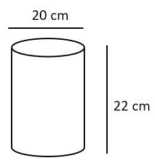Volume bangun ruang di samping adalah ….
26. Pak Imam mempunyai tiga kebun yang luasnya 3 ha, 1.900 m2, dan 1,75 are. Jika kebunnya dijual 2,5 ha, maka luas kebun Pak Imam sekarang...m2
27. Diketahui koordinat B(0,-3), C(2,1), dan D(0,3). Jika ABCD sebuah layang-layang, maka koordinat A adalah…..
28. Tanah pekarangan Pak Asto berbentuk seperti gambar di bawah.
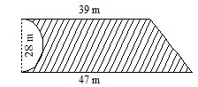Maka luas tanah pekarangan Pak Asto adalah … m2
29. Perhatikan gambar berikut! Banyak sisi bangun tersebut ada ….
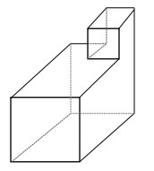30. Perhatikan gambar berikut!
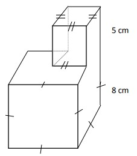Luas permukaan bangun tersebut adalah ….
31. Banyak simetri lipat pada bangun di bawah ini adalah…
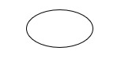32. Berikut ini data olahraga yang disukai siswa kelas VI SD Harapan.
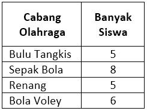Diagram lingkaran dari data di atas yang tepat adalah ….
33. Di bawah ini diagram batang hasil penangkapan ikan seorang nelayan dalam 6 hari dinyatakan dalam kg.
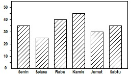Selisih hasil penangkapan yang tertinggi dan terendah adalah … .
34. Nilai rata – rata matematika dari 18 siswa adalah 76. Nilai tersebut belum termasuk nilai Adi dan Nia. Setelah nilai Adi dimasukkan, nilai rata – rata menjadi 77. Nilai Adi 5 lebihnya dari nilai Nia. Nilai rata – rata setelah nilai Adi dan Nia dimasukkan adalah ….
35. Perhatikan diagram di bawah !
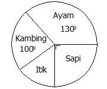Data jumlah ternak di desa Suka Makmur. Jika ternak itik ada 360 ekor, maka ternak sapi ada … ekor.
36. Perhatikan gambar berikut ini !
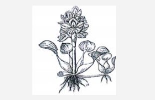Maka apakah bentuk dari adaptasi pada tanaman diatas ialah?..
37. Pada tanaman paku yang bisanya terdapat menempel dibatang kelapa dengan membentuk suatu simbiosis. Maka apakah yang membuat hal itu terjadi?…
38. Pada suatu ekosistem kebun terdapat tanaman tomat, ulat, dan ayam. Kemudian datang segerombolan musang sebagai predator.
Perkembangan yang akan terjadi pada ekosistem tersebut adalah ….
39. Perhatikan ilustrasi berikut!
Beni dan keluarganya hidup di daerah perkotaan. Mereka tinggal di daerah pemukiman padat penduduk. Banyak sampah rumah tangga yang dihasilkan di daerah tersebut. Tempat sampah tidak mampu menampung seluruh sampah, sehingga akhirnya mereka membuangnya ke sungai. Berdasarkan ilustrasi di atas, dampak yang terjadi akibat pembuangan sampah ke sungai bagi lingkungan adalah
40. Pasangan jenis dan bentuk kaki burung yang tepat adalah...
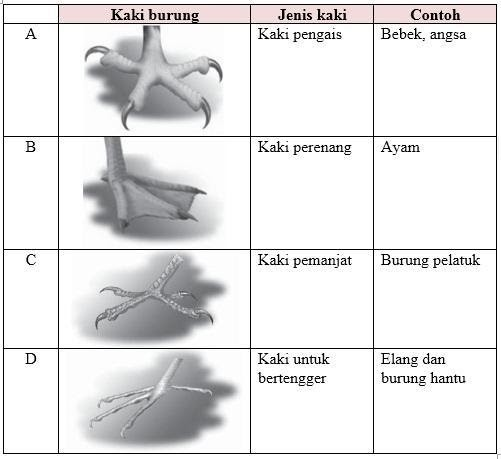41. Perhatikan tabel berikut!
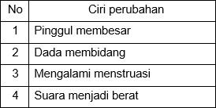Perkembangan manusia pada remaja putri ditunjukkan pada nomor ….
42. Perhatikan gambar berikut!
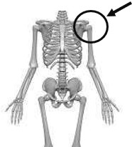Nama sendi dan arah geraknya yang tepat sesuai gambar yang ditunjuk adalah ….
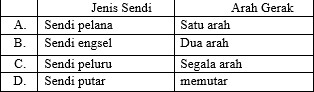43. Perhatikan gambar berikut!
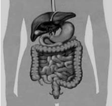Enzim yang dihasilkan oleh alat pencernaan yang ditunjuk anak panah adalah ….
44. Perhatikan gambar berikut!
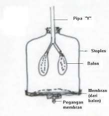Proses menghirup udara ketika bernapas dapat ditunjukkan oleh model pernapasan tersebut dengan cara ….
45. Perhatikan tabel benda dan sifatnya berikut!
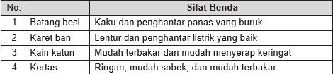Berdasarkan tabel tersebut, pasangan benda dan sifatnya yang tepat adalah . . . .
46. Perhatikan gambar berikut!
Air di bagian permukaan daun lama-kelamaan akan bergerak ke bawah kemudian jatuh ke tanah. Gaya yang bekerja pada air tersebut adalah...
47. Perpindahan panas secara radiasi terjadi pada peristiwa . . . .
48. Sumber energi yang digunakan oleh alat seperti tampak pada gambar adalah ... .
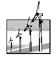49. Kegiatan manusia yang dapat mengganggu daur air berupa penyerapan air adalah …
50. Perhatikan gambar di bawah ini!
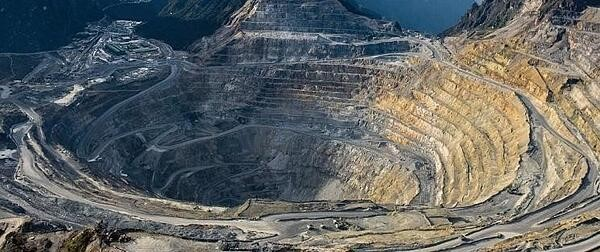Berdasarkan gambar di atas dampak negatif terhadap lingkungan yang terjadi adalah….
Powered by SEVEN7H Edu & Kevin Jonathan